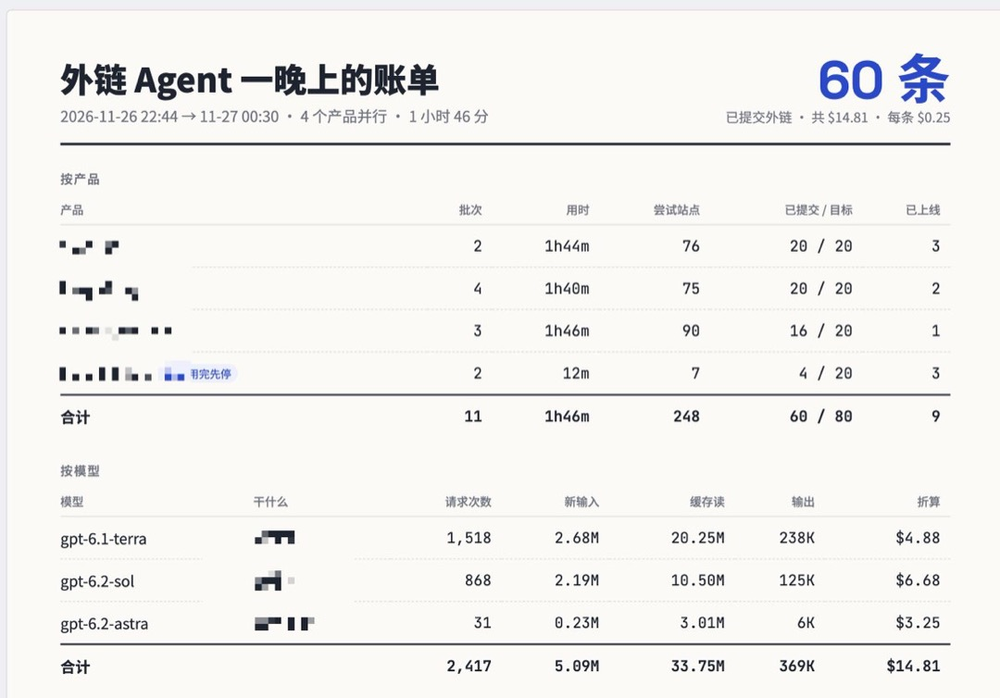
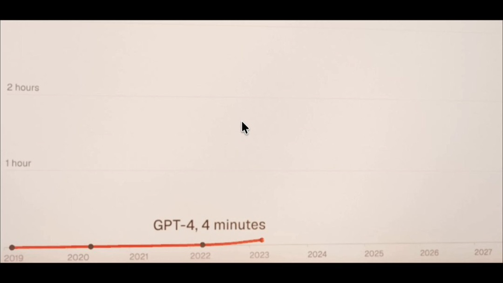
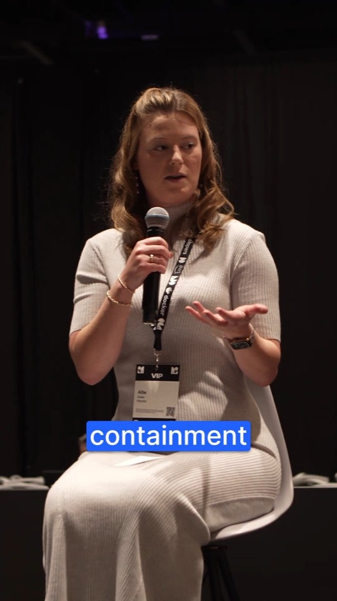
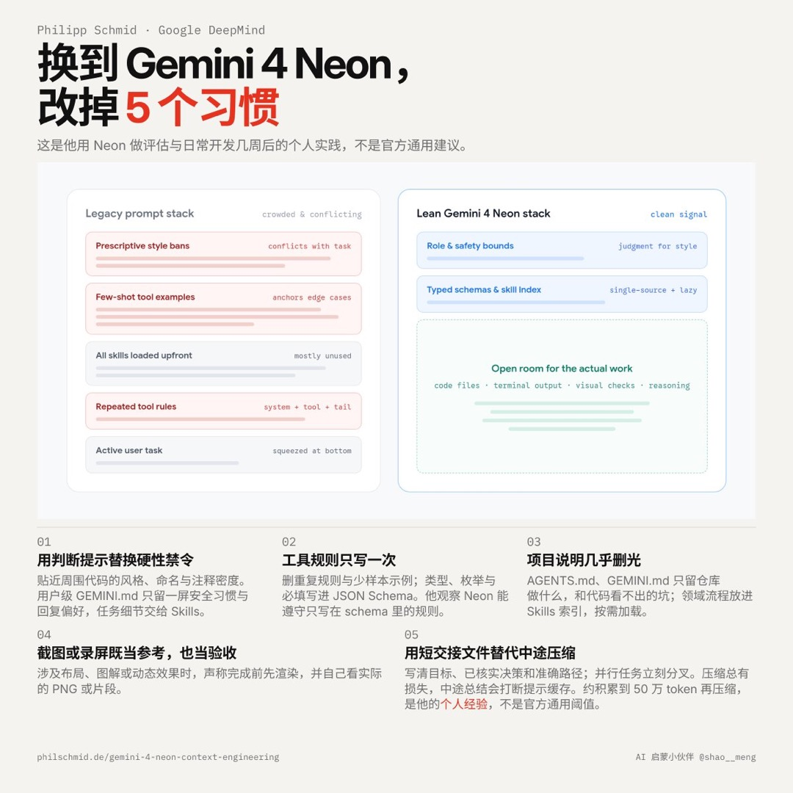
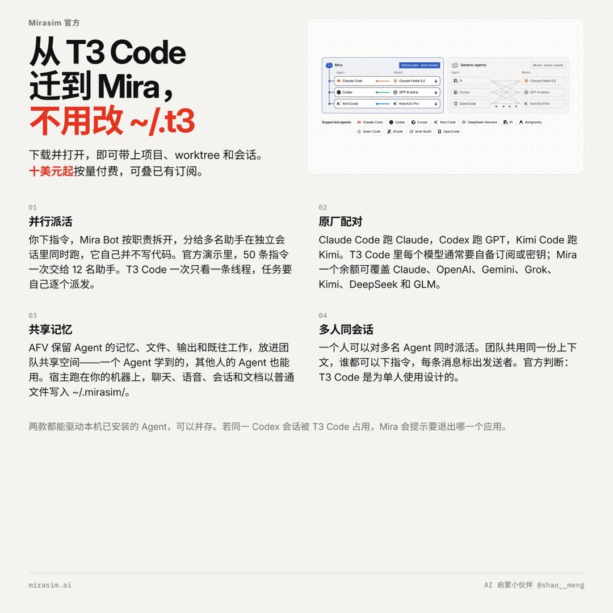
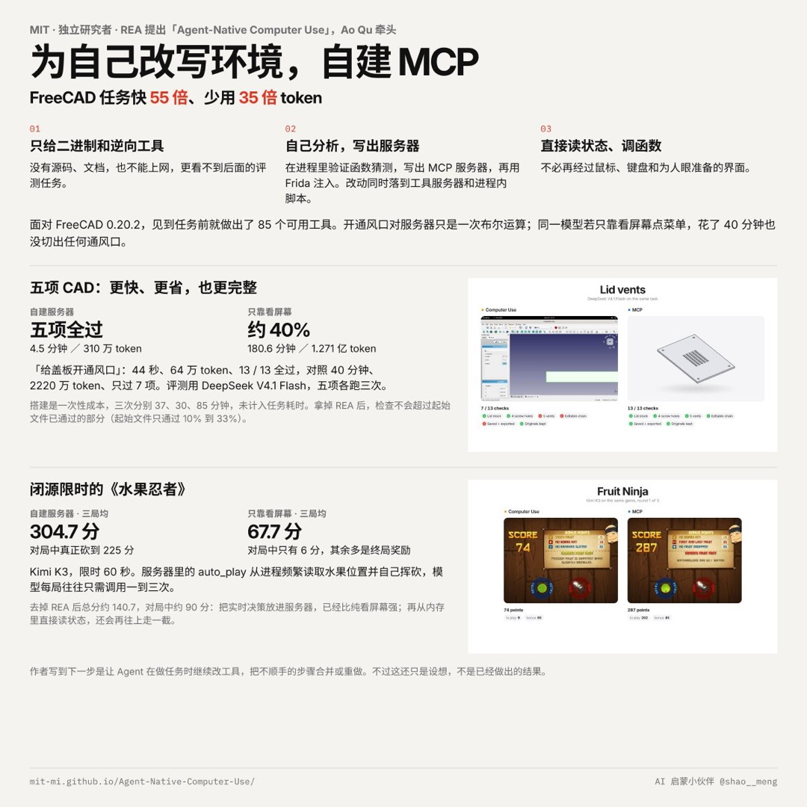
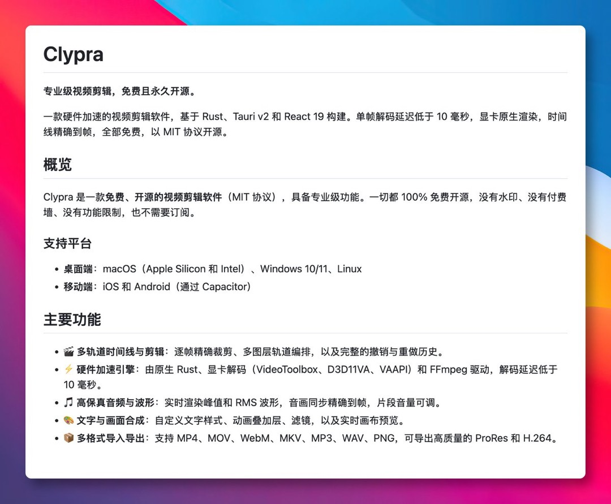

本期速览
01 pi 底座外链 agent 两小时提交60个
03 AI热潮致存储芯片罕见供应紧张
11 Gemini 4 Neon 上下文工程五习惯
12 Mira 支持并行派活与原厂模型配对
13 Agent 自建 MCP 使 FreeCAD 快55倍
01｜pi 底座外链 agent 两小时提交60个
来源（X） · @bozhou_ai · 2026-11-27 01:06
grokbot 来做发外链的事情，消耗巨高，100 美金的套餐一天提交 60 个，周限最多坚持 5 天，于是乎我决定直接基于 pi 作为底座，搓一个专门干外链的 agent，针对单独的场景做优化，效果甚佳
今天晚上这个版本，不到两个小时就提交了 60 个，主要是不怎么占用电脑内存，同时 token 消耗巨低
突然觉得做一些垂类的 agent 还是非常有前景的，通用 Agent 可能能够完成任务，但是绝对是做不到那种非常适配

02｜Gemini 4 Neon 复刻3D PPT
来源（X） · @op7418 · 2026-11-26 22:04
我觉得实现部分倒还好，创意部分比较不够：它的转场、细节和整体的统一构思上，差原始的不少
引用内容
歸藏(guizang.ai) @op7418
这个据传是 Opus 5.6 做的 PPT 太恐怖了：
每一个页面都是一个完整的 3D 场景，然后用无缝衔接的动画和运镜串联起来
他们路由到的这个模型也不一定是 Opus 5.6 吧？是不是新的 Fable 啊？这么强啊！
把它的代码下下来了，是一个 5M 的单网页文件

03｜AI热潮致存储芯片罕见供应紧张
来源（X） · @ChineseWSJ · 2026-11-26 22:01
芯片短缺让各方忙于抢货。全球企业纷纷设立采购作战室，在eBay等网站上搜寻货源，并想方设法争取半导体巨头的青睐。https://cn.wsj.com/articles/WP-WSJS-0004096744
04｜Docker 发布 Agent 权限控制参考架构
来源（X） · @Docker · 2026-11-26 22:01
中文译文
开发团队需要控制措施，限制智能体可以访问和做什么，并在每一步检查它们的工作。
Agent Baseline 的参与者最近发布了一个参考架构，正是为此而设计的。
了解更多：
https://bit.ly/4ARuNUD
原文
Dev teams need controls that limit what agents can access and do, and check their work at each step.
Agent Baseline participants recently published a reference architecture designed to do exactly that.
Read more:
https://bit.ly/4ARuNUD

05｜AI 半小时修复14年前 WordPress 插件
来源（X） · @williamlong · 2026-11-26 21:59
06｜前沿模型可设计蛋白质并预测结构
来源（X） · @DeepLearn007 · 2026-11-26 01:29
中文译文
这是 AI 的一个绝佳用例，展示了前沿模型如何在各项能力上实现泛化
原文
A great use case for AI and shows how frontier models are generalising across capabilities
引用内容
nature @Nature
中文译文
Anthropic 和 OpenAI 的语言模型能够设计蛋白质并预测其序列和结构——这些能力此前仅在专用 AI 工具中出现
https://go.nature.com/4tksnLG
原文
Anthropic and OpenAI’s language models can design proteins and predict their sequences and structures — capabilities previously seen only in specialized AI tools
https://go.nature.com/4tksnLG
07｜Wi-Fi 穿墙雷达开源项目获10万星
来源（X） · @laobaishare · 2026-11-26 15:53
已经拿到超过 105000 颗星，全程不用任何摄像头就能追踪人。
项目 ⬇️
08｜Monologue 上线 ChatGPT 与 Claude 插件
来源（X） · @naveennaidu_m · 2026-11-26 11:57
中文译文
Monologue 在 ChatGPT 和 Claude 上已有官方插件。
连接你的智能体，从你的会议中提取洞察
原文
Monologue has official plugin on ChatGPT and Claude.
Connect your agent to pull insights from your meetings
引用内容
Brandon Gell @bran_don_gell
中文译文
一个月前，我收到了一些尖锐的反馈，关于是什么阻碍了我成为我（以及这个人）认为我有能力成为的那种高管运营者和领导者。听到这些确实很难受，尤其是因为它触及了我自认为是一项优势的东西的根源：好奇心。
反馈是：如果我想变得出色，我需要以好奇心为先导。
我是一个信念坚定、充满热情、非常有能力的运营者，但我可能情绪化、混乱，而且倾向于快速分享自己的想法，而不是收集团队的反馈。在我最好的状态下，我以好奇心为先导；在我最差的状态下，我没有。
@danshipper 有一个很好的想法，关于我如何训练自己成为我想成为的领导者。他让我找我的 @OpenAI Dot（Milo）帮忙。它已经在读取我所有的 Slack 消息了，所以我把它连接到 @usemonologue，我在那里记录所有会议，我要求它也审查所有这些内容。
我的指令很简单：我想以更高管的方式沟通。我想以好奇心为先导。我希望你尽可能给我接近实时的反馈。
我很快发现了两件事：
1. 不需要 Milo 提示，我就开始以好奇心为先导了。我知道有东西在追踪我的一举一动，所以我主动开始按照我知道自己应该做的方式行事。
2. 当我失误时，Milo 会指出来，有好几次，我迅速编辑了我的消息，或者澄清了我在会议上说过的话。我在实时打破坏习惯。
几周之内，我真切地感觉自己的领导能力和沟通能力成倍提升。我觉得我的团队也看到了。最重要的是，我感觉更平静了。我能更流畅地应对我们业务中的起伏。
成为你能成为的最好的个人和领导者，从来没有比现在更好的时机。沟通是工作中最重要的事情，而现在只要你愿意告诉它你想达成什么目标并真正付诸反馈行动，就有可能拥有一个全天候的教练。
这是我使用的技能。把它放入你选择的个人智能体中，并连接到你的 Slack/Teams + 会议记录。你不会后悔的！
https://github.com/EveryInc/executive-feedback-skill
原文
One month ago I got some tough feedback about what was stopping me from becoming the executive operator and leader that I (and this person) thought I was capable of. It was definitely tough to hear, especially because it got to the root of something I consider to be a strength of mine: curiosity.
The feedback was that if I wanted to be great, I needed to lead with it.
I am a high conviction, super passionate, really capable operator, but I can be emotional, messy, and quick to share my thoughts vs collect feedback from team. At my best, I lead with curiosity, at my worst, I don't.
@danshipper had a great idea for how I could train myself to become the leader I wanted to be. He told me to ask my @OpenAI Dot (Milo) to help. It was already reading all my slack messages. so I connected it to @usemonologue, where I record all my meetings, and I asked to it review all of those too.
My instructions were simple: I want to communicate more executively. I want to lead with curiosity. And I want you to give me as close to real-time feedback as possible.
I quickly found two things happened:
1. Without needing to be prompted by Milo, I was leading with curiosity. I KNEW something was tracking my every move, so I proactively started acting like I knew I should.
2. When I slipped up, Milo brought it up to me and on several occasions, I quickly edited my message, or clarified something I had said in a meeting. I was breaking bad habits in real time.
Within weeks I genuinely feel like I've multiplied my leadership abilities and communication. I think my team sees it too. And most important of all is that I feel calmer. I'm able to handle ups and downs in our business more fluidly.
There has NEVER been a better time to be the best person and leader you can be. Communication is the most important thing in work, and it's now possible to have an always on coach if you're willing to tell it what you want to accomplish and actually act on the feedback.
Here's the skill I used. Drop it into your personal agent of choice and connect it to your slack/teams + meeting notes. You wont regret it!
https://github.com/EveryInc/executive-feedback-skill
09｜CrommaCode 1.0 优化多款 GUI
来源（X） · @hungryturbo · 2026-11-26 21:54
引用内容
赵纯想 @chunxiangai
对 Antigravity、Claude Code、CodeX 的 GUI 使用体验，进行了多轮优化。1.0.0 版本中，梦幻泡影和量子堆肥均已闪亮登场。你的 AI 工作不再是纯文字的渲染，我们在 GPUI 中恣意狂欢，每一次思考都在与 GPU 共舞。
感谢社区意见箱的朋友的提议，所有意见都会被接管，很少被放弃！
10｜Lcu 将 Codex computer use 剥离复用
来源（X） · @vikingmute · 2026-11-26 21:53
Cua driver https://cua.ai/cua-driver 完全自研的 rust 编写的 更轻量一些
我之后会试一试，看起来都还很不错
引用内容
Viking @vikingmute
11｜Gemini 4 Neon 上下文工程五习惯
来源（X） · @shao__meng · 2026-11-26 09:55
日常给编程 Agent 下指令时，你刚写的那几句往往只占模型所见内容的一小部分。系统指令、仓库文件、工具定义、技能和历史对话会填满其余上下文，并进入之后的每一轮请求。规则写得太细，迟早会和当前任务打架。
Google DeepMind 负责 Agents 与 Gemini API 的工程师 Philipp Schmid，此前是 Hugging Face 技术负责人。他在连续几周用 Gemini 4 Neon 做评估和日常开发后发现，许多为旧模型准备的护栏和规则，反而拖慢了它，甚至让它在本已能独立处理的边缘情况下失败。于是他改掉了 5 个习惯。
https://www.philschmid.de/gemini-4-neon-context-engineering
# 用判断提示替换硬性禁令，把任务细节交给 Skills
他的系统指令是一点一点堆起来的：旧模型爱写又多又乱的注释，就加一条禁令；模型擅自改文件，再加一条限制。后来用户规则、项目规则和当前请求开始互相矛盾。比如一律禁止注释，一旦让它给公开函数补文档，两边就冲突了。遇到这种冲突，Gemini 4 Neon 会多花思考 tokens 去协调，而且常常仍按旧规则执行。
他删掉了死板的代码风格禁令，改成更简单的判断提示，例如让模型贴近周围代码的风格、命名和注释密度。按他的观察，这样减少了无效思考，也提高了准确性。现在用户级 GEMINI.md 只需一屏，只保留每次会话都适用的安全习惯和回复偏好，例如发布或改共享文档前先展示差异。任务细节全部放到 Skills 里。他提到，在自己的测试里，冗长禁令清单未必能让旧模型在调试时保持只读，却容易制造冲突；换成 Neon 后，去掉这些清单，修改范围反而更干净。
# 工具规则只写一次，项目说明只留代码看不出的坑
更早的模型上，他常常把同一条工具用法写两遍，还用少样本示例演示合法参数。常见输入上，示例确实有用；任务一旦和示例不同，模型就可能照抄多余字段或错误参数形态，发出无效调用。换到 Neon 后，他删掉重复规则和示例，把参数类型、枚举值和必填字段直接写进工具的 JSON Schema。仓库脚本和命令行工具也一样，用清晰的选项和直接报错来引导。工具面要收窄，过长日志写进文件，而不是倒进上下文。他的经验是，即便会话已经很长，Neon 仍能遵守只写在 schema 里的那一条规则。
项目级的 AGENTS.md 和 GEMINI.md，他几乎删光了。这些文件要么重复模型读仓库就能看到的目录结构，要么变成逐渐过时的备忘录。现在只保留仓库做什么，以及代码里看不出来的坑。领域流程变成技能，在索引里各用一行描述；内容变长时再拆成互链小文件，让 Agent 只读需要的部分。更新很快的命令行工具、SDK 和内部 API 最能受益。按他的说法，按需加载当前指南，既少走弯路，也常能降低总 token 用量；Neon 也能较稳地找到并加载相关技能和延迟工具，几乎很少误触发。
# 用图像做参考和自检，用交接文件代替中途压缩
普通后端改动，短文本通常就够。一旦涉及界面布局、图解或动态效果，他更常把截图或屏幕录制既当参考，也当验收：让 Agent 在宣称完成前先渲染结果，打开实际的 PNG 或片段自己看一遍。被裁切的文字和对不齐的布局，文本日志往往看不出来。
即便有 1M token 的上下文窗口，长会话仍会变嘈杂，最后可能要压缩。他的判断很干脆：压缩总是有损失。任务中途总结会打断提示缓存，丢掉行级细节，随后又不得不把已经打开过的文件再读一遍。因此，任务进入新阶段时，他会先让 Agent 写一份简短交接文件，写清目标、已核实的决策和准确文件路径，再开新会话。中途若要并行做第二件事，就立刻分叉，以免把两条线挤在同一线程里。
如果是自建 Agent 循环，并把自动压缩留作兜底，也不要过早触发。对他自己来说，大约积累到 50 万 token 再压缩比较合适，这是个人经验，不是官方通用阈值。若必须压缩，也要把仍在使用的文件路径和已核实决策钉进摘要里。

引用内容
Philipp Schmid @_philschmid
中文译文
在运行了几周评估并用 Gemini 4 Neon 每天构建之后，我意识到我为旧模型写的许多护栏、技能和规则正在拖慢它的速度。
以下是我改变的 5 件事。 https://x.com/i/article/2125577971788386305
原文
After weeks of running evals and building daily with Gemini 4 Neon, I realized that many of the guardrails, skills, and rules I wrote for older models were slowing it down.
Here are 5 things I changed. https://x.com/i/article/2125577971788386305
12｜Mira 支持并行派活与原厂模型配对
来源（X） · @shao__meng · 2026-11-26 10:32
从 T3 Code 迁到 Mira 只需两步：下载并打开。它会自动带上你的项目、worktree 和会话，并且不改动 ~/.t3。稍早的对比文更留有余地：两款都能驱动本机已安装的 Agent，可以并存。更新日志也有一条侧面印证：若某个 Codex 会话正被 T3 Code 占用，Mira 会提示要退出哪一个应用。
# 四个机制：并行派活、原厂配对、共享记忆、多人同会话
官方把「为什么好用」总结为四件事：同时跑无限个 Agent，各家模型用原厂 Agent，任务留下可复用的记忆和产物，并且同时适合单人和团队。
并行派活有两种用法：Bot 模式，或原来的多会话模式。你持续下达指令，由 Mira Bot 分给多名助手同时做。官方演示里，50 条指令一次性交给 12 名助手并行处理。他们把 T3 Code 写成一次只看一条线程，任务要自己逐个派发。按产品文档，Mira Bot 自己并不写代码：它按助手职责拆分请求，每一部分在独立会话里跑。
模型这一侧，重点是「原厂配对」：Claude Code 跑 Claude、Codex 跑 GPT、Kimi Code 跑 Kimi。文中配图列出 11 种 Agent，包括 Claude Code、Codex、Cursor、Kimi Code 等。在 T3 Code 里，每个模型通常要自备订阅或密钥；在 Mira 里，一个余额可以覆盖 Claude、OpenAI、Gemini、Grok、Kimi、DeepSeek 和 GLM。
任务积累，靠的是 AFV (Agentic File Virtualization)。它会保留 Agent 的记忆、文件、输出和既往工作，避免每次从零开始；这些内容放在团队共享的空间里，一个 Agent 学到的，其他人的 Agent 也能用。官网写得更具体：宿主跑在你的机器上，聊天、语音、会话和文档都以普通文件写入 ~/.mirasim/。
协作上，一个人可以对多名 Agent 同时派活；一个团队则共用同一份上下文，谁都可以下指令，每条消息会标出发送者。官方的判断是：T3 Code 是为单人使用设计的。

引用内容
Mira @Mirasim_ADE
中文译文
原文
13｜Agent 自建 MCP 使 FreeCAD 快55倍
来源（X） · @shao__meng · 2026-11-26 11:31
MIT 的 Ao Qu、Paul Liang，独立研究者 Yinzhen Huang、Yann，以及 REA 团队的 Morluto、Kaoru、N0zo，项目由 Ao Qu 牵头。研究者们提出「Agent-Native Computer Use」：允许 Agent 逆向手头的软件，自己做出更适合调用的工具，然后直接读取程序状态、调用内部函数，不必再经过鼠标、键盘和为人眼准备的界面。
https://mit-mi.github.io/Agent-Native-Computer-Use/
# 只给二进制和逆向工具，Agent 自己搭出 MCP
搭建时，Agent 只拿到编译后的程序，以及 REA 逆向工具包，没有源码和文档，也不能上网，更看不到后面的评测任务。它要自己分析程序暴露了哪些函数，在运行中的进程里验证猜测，写出 MCP 服务器，再用 Frida 把脚本注入进程，并拿真实调用做检查。这样一来，改动会同时落到两边：一边是给 Agent 用的工具服务器，一边是程序内部被注入的脚本。面对 FreeCAD 0.20.2，它在见到任务之前就做出了 85 个可用工具。后来要在盖板上切开通风口，对服务器来说只是一次布尔运算调用；同一模型若只靠看屏幕点菜单，花了 40 分钟也没切出任何通风口。
# FreeCAD 五项任务：更快、更省，也更完整
评测用的是 DeepSeek V4.1 Flash，五项 CAD 任务各跑三次，起始文件只通过 10% 到 33% 的检查。用自建服务器时，五项全部通过；只靠看屏幕操作时，平均只通过约 40%。五项合计，前者用了 4.5 分钟和 310 万 token，后者是 180.6 分钟和 1.271 亿 token，大约都差了 40 倍。演示里的「给盖板开通风口」更明显：44 秒、64 万 token、13 项检查全过，对照则是 40 分钟、2220 万 token，只过了 7 项，也就是文中所说的快 55 倍、少用 35 倍 token。
搭建服务器是一次性成本，三次分别花了 37、30 和 85 分钟，没有计入上面的任务耗时。若搭建时拿掉 REA，服务器就只能点菜单、从窗口里读结果，检查成绩不会超过起始文件已经通过的部分。
# 闭源限时的《水果忍者》里，差别同样大
他们又用闭源、限时 60 秒的《水果忍者》做测试，模型换成 Kimi K3。用自建服务器时，三局平均 304.7 分；看屏幕操作只有 67.7 分，而且后者大部分是终局奖励，对局中真正砍到的分数平均只有 6 分，服务器这边则是 225 分。关键在于，服务器里的 auto_play 工具会从游戏进程里频繁读取水果位置并自己挥砍，模型每局往往只需调用一到三次。去掉 REA 后，总分大约还能到 140.7，对局中约 90 分。把实时决策放进服务器，已经比纯看屏幕强；再从内存里直接读状态，还会再往上走一截。
作者也写到下一步：让 闭源限时的《水果忍者》里，差别同样大
他们又用闭源、限时 60 秒的《水果忍者》做测试，模型换成 Kimi K3。用自建服务器时，三局平均 304.7 分；看屏幕操作只有 67.7 分，而且后者大部分是终局奖励，对局中真正砍到的分数平均只有 6 分，服务器这边则是 225 分。关键在于，服务器里的 auto_play 工具会从游戏进程里频繁读取水果位置并自己挥砍，模型每局往往只需调用一到三次。去掉 REA 后，总分大约还能到 140.7，对局中约 90 分。把实时决策放进服务器，已经比纯看屏幕强；再从内存里直接读状态，还会再往上走一截。
作者也写到下一步：让 Agent 在做任务时继续改工具，把不顺手的步骤合并或重做。不过这还只是设想，不是已经做出的结果。 在做任务时继续改工具，把不顺手的步骤合并或重做。不过这还只是设想，不是已经做出的结果。

引用内容
Ao Qu @ao_qu18465
中文译文
为什么要让智能体像人类一样使用计算机？
在这篇博客中，我们展示了逆向工程如何实现更强大、更高效的计算机使用，而无需查看屏幕。
我们的智能体对软件进行逆向工程，为其自身用途重新接线，并构建一个 MCP 服务器来与之交互。
⚡ FreeCAD：快 55 倍，token 少 35 倍。
🍉 Fruit Ninja：实时专家级游玩。
当智能体能够为自己重塑环境时，也许数字文明就从那里开始。
博客：https://mit-mi.github.io/Agent-Native-Computer-Use/
代码：https://github.com/mit-mi/Agent-Native-Computer-Use-Code
原文
Why make agents use computers like humans?
In this blog, we show how reverse engineering enables much more powerful and efficient computer use without ever looking at the screen.
Our agent reverse engineers software, rewires it for its own use, and builds an MCP server to interact with it.
⚡ FreeCAD: 55× faster, 35× fewer tokens.
🍉 Fruit Ninja: expert-level play in real time.
When agents can reshape their environments for themselves, maybe that’s where a digital civilization begins.
Blog: https://mit-mi.github.io/Agent-Native-Computer-Use/
Code: https://github.com/mit-mi/Agent-Native-Computer-Use-Code
14｜三款新模型能力横向实测对比
来源（X） · @AI_Whisper_X · 2026-11-26 21:31
推荐：
1/ 聊天、写文章、改文案 → Gemini 4 Neon / Opus 5.5
Neon 激活参数 500B+，开朗好聊、文字舒服，像当年人人都爱的 GPT-4o。但GDPx 11 个领域输 10 个，软件工程只有 4.4%，3D 和做游戏也差一点。
2/ 写代码、长程跑工程 → Fable 5.2
两张榜写代码都是第一（GDPx 软件工程 24.4%，OWE-Bench 54.6%）。但确实很费钱，爱拉子 agent 写测试复查。日常开发可以先用 Opus 5.5。
3/ 金融建模、科研、硬件设计这类难推理 → GPT-6.2 Astra
GDPx 总榜第一（19.3%），11 个领域拿 6 个第一。被骂惨是因为写代码偏弱（13.3%）+ 太按字面意思来，像组里最能打但大家都得忍他脾气的同事。用它就一条：需求一次性写死。
4/ 控预算 / 日常主力 → Claude Opus 5.5（极致抠 API 成本看 GPT-6.2 Sol）
Opus 5.5 是我自己最喜欢的一个，干活快、聪明、比 Fable 便宜得多；如果按单题 API 成本极致抠预算，GDPx 帕累托曲线几乎被 OpenAI（6.2 Sol）包圆。
顺带一个很扎心的对比：纯文本上开源和闭源确实在缩近，但到了长程工程和 3D/CAD 差距还极大。OWE-Bench 物理工程里 Fable 5.2 考 59.6%、GPT-6 Astra 57.3%，DeepSeek V4.1 Flash 只有 9.1%、GLM-5.3 只有 6.3%。
其实人类已经快要不能评估模型了。
SemiAnalysis 也是这个意思：大多数人手里的问题不够难，推特上测出来的，是模型好不好交流。另外 GPT-6.2 Astra 确实是个偏科模型，所以评价才这么两极。
具体可以参考这个
https://mp.weixin.qq.com/s/7D54sxEJ4ODFW_JYLdFOoA
15｜Clypra 开源无付费墙视频剪辑
来源（X） · @GitHub_Daily · 2026-11-26 21:30
Clypra 是一个开源的视频剪辑软件，没有水印、没有付费墙，也不用订阅，功能都是放开用的。
多轨道时间线、逐帧精确裁剪、文字和动画叠加、滤镜这些常用的都有，音频还能显示实时波形，对着波形卡点会方便很多。
GitHub：https://github.com/AIEraDev/Clypra
底层用 Rust 加显卡硬件解码，官方给的数据是解码一帧不到 10 毫秒，拖动时间线不容易卡。导入支持 MP4、MOV、MKV、MP3 这些常见格式。
macOS、Windows、Linux 都能装，平时剪个 vlog、做个教程视频，用它够了。
